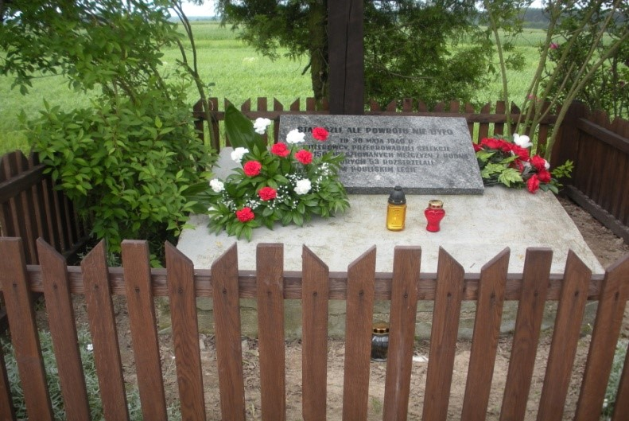
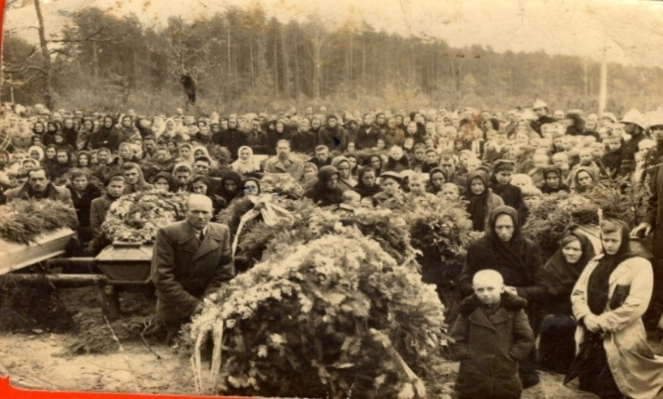
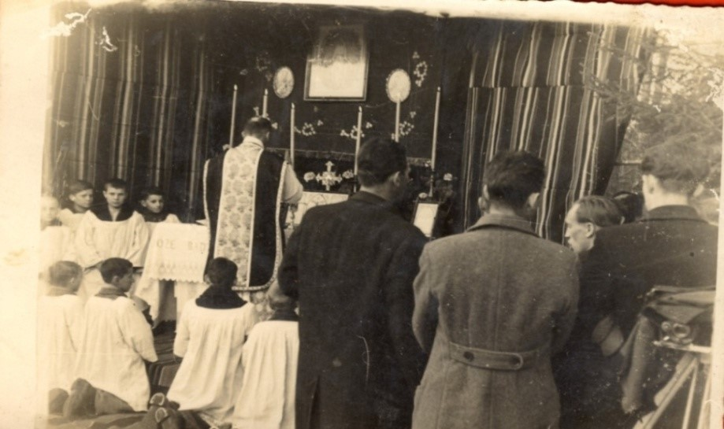
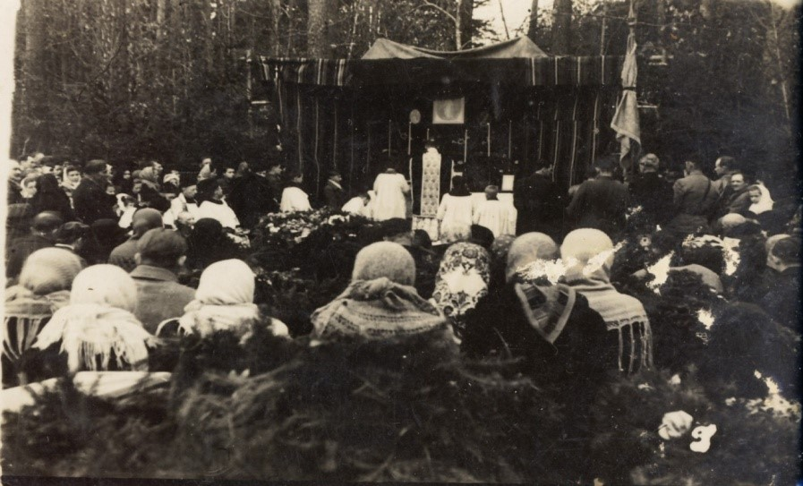
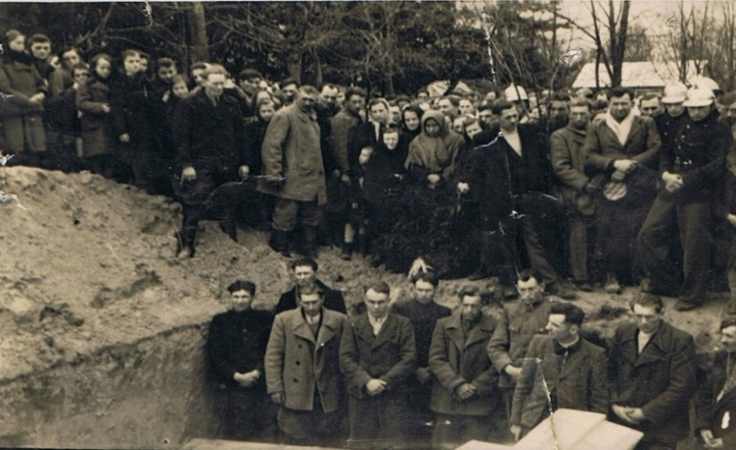
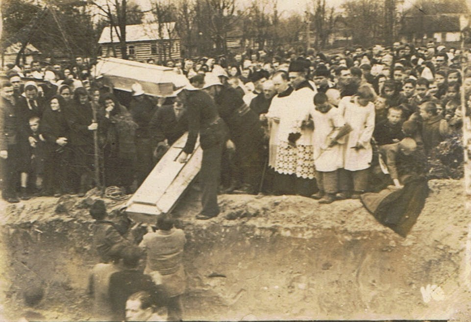

Pomnik w miejscu selekcji niedaleko lasu
Msza polowa w lesie 23.04.1945 r. (na pierwszym planie trumna Ks.
Romana Ryczkowskiego)

Pomnik w miejscu selekcji niedaleko lasu
Msza polowa w lesie 23.04.1945 r
Ołtarz polowy podczas mszy pogrzebowej 23.04.1945 r.
Msza św. w intencji ofiar 23.04.1945 r.